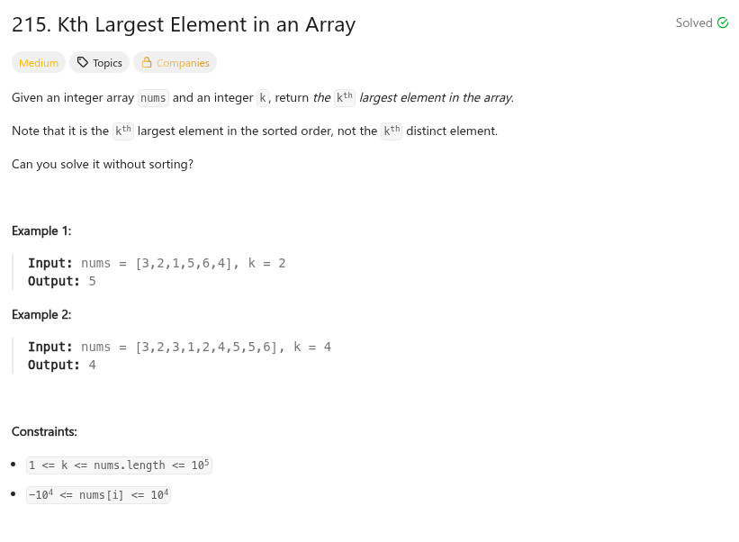

參考資訊：
https://github.com/doocs/leetcode/blob/main/solution/0200-0299/0215.Kth%20Largest%20Element%20in%20an%20Array/README_EN.md
題目：

#define BASE 100000
#define MAX_SIZE 200000
int findKthLargest(int *nums, int numsSize, int k)
{
int cc = 0;
int *cnt = NULL;
cnt = malloc(sizeof(int) * MAX_SIZE);
memset(cnt, 0, sizeof(int) * MAX_SIZE);
for (cc = 0; cc < numsSize; cc++) {
cnt[nums[cc] + BASE] += 1;
}
for (cc = (MAX_SIZE - 1); ; cc--) {
k -= cnt[cc];
if (k <= 0) {
return cc - BASE;
}
}
return 0;
}